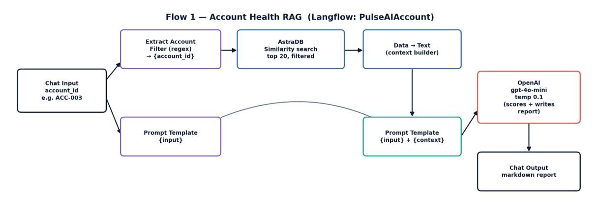
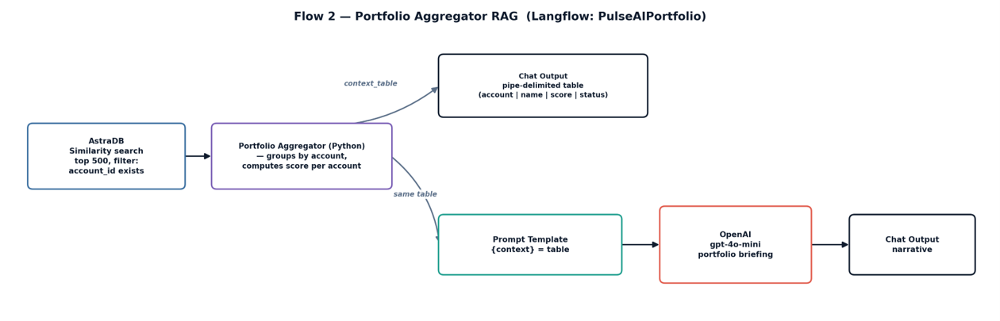
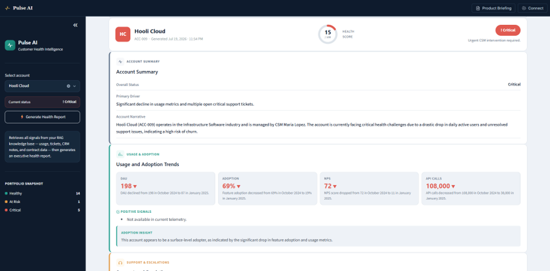
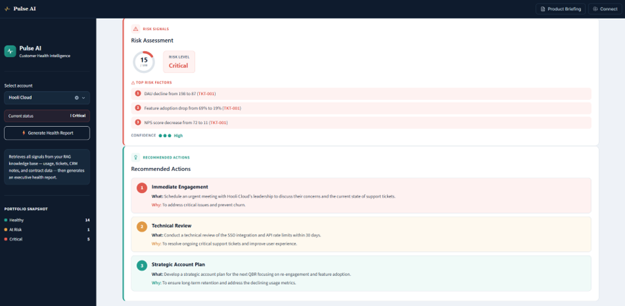

<!DOCTYPE html>
<html lang="en">
<head>
  <meta charset="UTF-8" />
  <meta name="viewport" content="width=device-width, initial-scale=1.0" />
  <title>Pulse AI – Technical Documentation</title>
  <style>
    :root{
      --navy:#17395f;
      --light:#e9f0fa;
      --text:#1f2937;
      --muted:#4b5563;
      --border:#cbd5e1;
      --bg:#ffffff;
    }

    * { box-sizing: border-box; }
    body{
      margin:0;
      font-family: Arial, Helvetica, sans-serif;
      color:var(--text);
      background:#f8fafc;
      line-height:1.5;
    }

    .page{
      max-width: 1100px;
      margin: 0 auto;
      padding: 24px 18px 48px;
      background: var(--bg);
    }

    .title-bar{
      background: var(--navy);
      color:#fff;
      text-align:center;
      font-weight:700;
      font-size: 28px;
      padding: 10px 16px;
      letter-spacing:.2px;
    }

    .subtitle-bar{
      background: var(--light);
      color:#243b53;
      text-align:center;
      font-weight:700;
      font-size: 18px;
      padding: 6px 16px;
      margin-bottom: 22px;
    }

    h2.section{
      font-size: 22px;
      margin: 26px 0 10px;
      padding: 4px 0;
      border-top: 1px solid #e5e7eb;
      background: var(--light);
      color:#243b53;
      font-weight:700;
    }

    h3{
      font-size: 18px;
      margin: 18px 0 8px;
      color:#243b53;
    }

    p{
      margin: 8px 0 12px;
      font-size: 16px;
    }

    ol, ul{
      margin: 8px 0 14px 24px;
      padding: 0;
      font-size: 16px;
    }

    li{ margin: 6px 0; }

    .figure{
      margin: 18px 0 24px;
      text-align:center;
    }

    .figure img{
      max-width: 100%;
      height: auto;
      border: 1px solid #dbe2ea;
      box-shadow: 0 2px 8px rgba(15, 23, 42, 0.08);
      display:block;
      margin: 0 auto;
      background:#fff;
    }

    .caption{
      margin-top: 8px;
      font-style: italic;
      color:#6b7280;
      font-size: 14px;
    }

    table{
      width:100%;
      border-collapse: collapse;
      margin: 10px 0 18px;
      background:#fff;
    }

    th, td{
      border:1px solid #111827;
      padding: 10px 12px;
      vertical-align: top;
      text-align:left;
      font-size: 15px;
    }

    th{
      background:#1e3a5f;
      color:#fff;
      font-weight:700;
    }

    .subtle{
      color:#334155;
      font-weight:700;
      margin-top: 14px;
    }

    @media print {
      body { background:#fff; }
      .page { max-width:none; padding:0; }
      .title-bar, .subtitle-bar { -webkit-print-color-adjust: exact; print-color-adjust: exact; }
      .figure { page-break-inside: avoid; }
      table { page-break-inside: auto; }
      tr { page-break-inside: avoid; page-break-after: auto; }
    }
  </style>
</head>
<body>
  <main class="page">
    <div class="title-bar">Pulse AI – Technical Documentation</div>
    <div class="subtitle-bar">IPL Neural Navigators | ICAIPM2026F | Pulse AI</div>

    <h2 class="section">1. System Overview</h2>
    <p>
      Pulse AI turns fragmented customer data -CRM notes, support tickets, product usage telemetry, and contract data
      -into one clear, explainable health story per account. Every statement in a report is grounded in real retrieved data,
      not guessed by the model, so a Customer Success Manager can see what is happening, why, and what to do next.
    </p>
    <p>
      The system is built on Retrieval-Augmented Generation (RAG), orchestrated in Langflow, with a Streamlit dashboard
      for the front end and a static documentation site on GitHub Pages.
    </p>

    <h2 class="section">2. System Architecture</h2>
    <p>The steps below trace one request from browser to LLM and back:</p>
    <ol>
      <li>
        The user opens the Docs Site (GitHub Pages) and enters Langflow credentials in the Connect modal. Credentials are
        saved to the browser's localStorage only.
      </li>
      <li>
        Clicking Live Demo reads those credentials and loads the Streamlit dashboard in an iframe, with the credentials
        appended as URL query params: ?lf_url=&amp;lf_key=&amp;lf_portfolio=
      </li>
      <li>
        Streamlit reads those params on startup and uses them to call the Langflow REST API -server-side, never from the
        browser directly.
      </li>
      <li>
        Langflow runs the matching RAG pipeline (embed → retrieve → augment → generate) and returns a structured
        health report as text.
      </li>
      <li>
        Streamlit parses that text into the dashboard's cards, score rings, badges, and action lists.
      </li>
      <li>
        An ngrok tunnel exposes the local Langflow instance (and, for this prototype, Streamlit itself) as a public HTTPS URL
        so the hosted doc site can reach them.
      </li>
    </ol>

    <div class="figure">
      
      <div class="caption">Figure 1 -Pulse AI end-to-end architecture: browser, tunnels, Langflow, vector store, and LLM.</div>
    </div>

    <h2 class="section">3. RAG Pipeline</h2>
    <p>
      Retrieval-Augmented Generation replaces a purely parametric LLM answer with one grounded in real, retrieved
      customer data. Instead of asking the model to recall facts from memory, Pulse AI first retrieves the relevant chunks of
      that account's actual data, then hands them to the model as context.
    </p>

    <ol>
      <li>Query -account_id (e.g. ACC-003) is sent as the only input.</li>
      <li>Embed -the account_id is converted into a vector using the same embedding model that indexed the knowledge base.</li>
      <li>Retrieve -the most similar chunks are pulled from the vector store: CRM notes, tickets, usage data, and billing records for that account.</li>
      <li>Augment -those chunks are inserted into the model's prompt as grounding context, alongside instructions on exactly how to structure the output.</li>
      <li>Generate -the model writes a structured markdown report: Account Summary, Usage &amp; Adoption, Support &amp; Escalations, Commercial Health, Risk Assessment, Recommended Actions.</li>
    </ol>

    <p>
      Why account_id as the query? A structured ID gives the most precise retrieval. Every chunk in the vector store is
      tagged with an account_id, so this query pulls everything for that account and nothing from any other -no cross￾account mix-ups in the generated report.
    </p>

    <div class="subtle">Knowledge Base Contents</div>
    <ul>
      <li>CRM notes -account manager notes, escalation history, relationship signals</li>
      <li>Support tickets -ticket ID, severity (Critical/High/Medium/Low), category, status</li>
      <li>Product usage telemetry -DAU, feature adoption %, API calls, session length, NPS</li>
      <li>Commercial data -contract value, renewal date, plan tier, CSM, expansion signals</li>
    </ul>

    <h2 class="section">4. The Two Langflow Flows</h2>

    <h3>Flow 1 -Account Health</h3>
    <p>Generates a full executive health report for one account.</p>
    <ol>
      <li>Chat Input receives the account_id (e.g. ACC-003).</li>
      <li>
        Extract Account Filter (custom component) reads the ID with a simple pattern match and builds a metadata filter,
        e.g. {"account_id": "ACC-003"}.
      </li>
      <li>
        Astra DB embeds the query and runs a similarity search against the account_signals collection, filtered to that
        account, returning the top 20 matching records.
      </li>
      <li>Data → Text formats those records into one context block covering all four data categories.</li>
      <li>
        Prompt Template combines the account_id, the retrieved context, and detailed formatting rules -including the
        exact scoring rubric used to calculate the Health Score.
      </li>
      <li>
        OpenAI (gpt-4o-mini, temperature 0.1) writes the markdown report and the final score.
      </li>
      <li>
        Chat Output returns the report text to Streamlit, which renders it and caches it for the session.
      </li>
    </ol>

    <p>API call: POST /api/v1/run/&lt;account-flow-id&gt; {"input_value": "ACC-003", "input_type": "chat"}</p>

    <div class="figure">
      
      <div class="caption">Figure 2 -Flow 1: Account Health, step by step.</div>
    </div>

    <h3>Flow 2 -Portfolio Aggregator</h3>
    <p>Produces a portfolio-wide summary across every tracked account.</p>
    <ol>
      <li>Receives the literal string "portfolio" as its trigger input.</li>
      <li>Astra DB returns records for every account in the knowledge base (up to 500 results).</li>
      <li>
        Portfolio Aggregator (custom Python component) scores each account 0–100 and classifies it Healthy / At Risk /
        Critical -the same rubric as Flow 1, computed directly in Python rather than by the LLM.
      </li>
      <li>That scored table is sent to a Prompt Template, which asks OpenAI for a short narrative portfolio briefing.</li>
      <li>
        Two things come back: the pipe-delimited scored table (used for the donut chart and top-risk list) straight from the
        aggregator, and the AI-written narrative from OpenAI.
      </li>
      <li>
        Streamlit caches both in session state for the rest of the session, so the sidebar doesn't re-call Langflow on every
        rerun.
      </li>
    </ol>

    <p>API call: POST /api/v1/run/&lt;portfolio-flow-id&gt; {"input_value": "portfolio", "input_type": "chat"}</p>

    <div class="figure">
      
      <div class="caption">Figure 3 -Flow 2: Portfolio Aggregator, step by step.</div>
    </div>

    <h2 class="section">5. Credential &amp; Security Flow</h2>
    <ul>
      <li>No credential is ever stored in source code, git history, or on any server.</li>
      <li>1. The user enters Langflow URLs and an API key in the Connect modal on the docs site.</li>
      <li>2. Those values are saved to the browser's localStorage only -never sent anywhere else.</li>
      <li>3. Clicking Live Demo reads localStorage and appends the values as URL query params.</li>
      <li>4. Streamlit reads those params at startup; they live only in that session's memory.</li>
      <li>
        5. The OpenAI API key stays inside the Langflow server's environment variables -it is never part of any request
        or response Streamlit sees.
      </li>
    </ul>

    <h3>What is never exposed?</h3>
    <ul>
      <li>The OpenAI API key -stays inside Langflow's server environment</li>
      <li>The Langflow API key -stored only in the user's browser localStorage</li>
      <li>Any credential in source code or git history</li>
    </ul>

    <h3>Controlled exposure (safe by design)</h3>
    <ul>
      <li>Langflow's public URL -useless on its own without the API key</li>
      <li>The ngrok tunnel URL -rotates on every restart</li>
      <li>Demo account data -entirely fictional (Acme Corp, Stark Industries, etc.)</li>
    </ul>

    <h2 class="section">6. Live Demo Screenshots</h2>
    <p>The following captures show the live dashboard and the reports it generates.</p>

    <h3>Portfolio Overview Dashboard</h3>
    <p>
      The portfolio view rolls all 20 tracked accounts into one snapshot -a donut chart of Healthy / At Risk / Critical
      accounts, a ranked list of the top 5 accounts needing attention, and a live signal breakdown across usage, support,
      billing, and engagement.
    </p>

    <div class="figure">
      
      <div class="caption">Figure 4 -Portfolio Overview: live Streamlit dashboard.</div>
    </div>

    <h3>Account Health Report</h3>
    <p>
      Selecting an account and generating a report produces a full executive narrative: a health score ring, account
      summary, usage and adoption trends, support and escalation detail, a risk assessment with named risk factors, and
      prioritized recommended actions. The example below is a Critical account (Hooli Cloud).
    </p>

    <div class="figure">
      
      <div class="caption">Figure 5a -Account Health Report: summary and usage &amp; adoption.</div>
    </div>

    <div class="figure">
      
      <div class="caption">Figure 5b -Account Health Report: risk assessment and recommended actions.</div>
    </div>

    <h2 class="section">7. Tech Stack</h2>
    <table>
      <thead>
        <tr>
          <th style="width:18%;">Layer</th>
          <th style="width:20%;">Technology</th>
          <th style="width:15%;">Version</th>
          <th>Purpose</th>
        </tr>
      </thead>
      <tbody>
        <tr>
          <td>AI orchestration</td>
          <td>Langflow</td>
          <td>&ge;1.0</td>
          <td>Visual RAG pipeline builder -wires vector store, embeddings, and LLM into a deployable REST flow</td>
        </tr>
        <tr>
          <td>LLM</td>
          <td>OpenAI gpt-4o-mini</td>
          <td>API, temp 0.1</td>
          <td>Generates structured health narratives from retrieved data</td>
        </tr>
        <tr>
          <td>Vector store</td>
          <td>Astra DB</td>
          <td>—</td>
          <td>Stores embedded account data (collection: account_signals)</td>
        </tr>
        <tr>
          <td>Dashboard</td>
          <td>Streamlit</td>
          <td>&ge;1.32</td>
          <td>Renders health cards, score rings, donut chart, PDF export</td>
        </tr>
        <tr>
          <td>PDF export</td>
          <td>fpdf2</td>
          <td>&ge;2.7</td>
          <td>Generates a downloadable health report PDF</td>
        </tr>
        <tr>
          <td>Markdown parsing</td>
          <td>markdown (Python)</td>
          <td>&ge;3.5</td>
          <td>Converts the LLM's markdown into dashboard HTML</td>
        </tr>
        <tr>
          <td>HTTP client</td>
          <td>requests</td>
          <td>&ge;2.31</td>
          <td>Calls the Langflow REST API from Streamlit</td>
        </tr>
        <tr>
          <td>Docs site</td>
          <td>Plain HTML / CSS / JS</td>
          <td>—</td>
          <td>Zero-build static site: briefing, launcher, settings</td>
        </tr>
        <tr>
          <td>Docs hosting</td>
          <td>GitHub Pages</td>
          <td>—</td>
          <td>Free static hosting from the repository</td>
        </tr>
        <tr>
          <td>Tunnel</td>
          <td>ngrok</td>
          <td>—</td>
          <td>Exposes local Langflow (and Streamlit) over HTTPS</td>
        </tr>
      </tbody>
    </table>
  </main>
</body>
</html>
